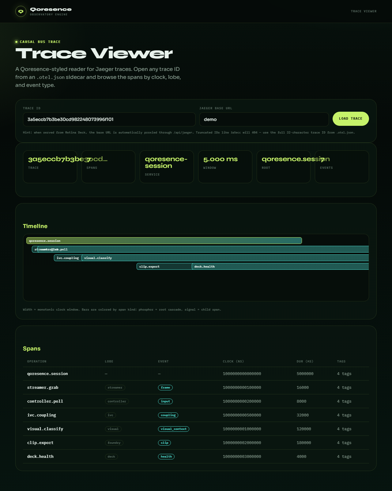

HDMI
Physical capture card opens once. Frames land in FrameHub.
Qoresence is a local-first observatory engine for gamers. HDMI video and DualSense HID share one monotonic clock. Deck, Lens, Mobile Glass, Ghost Cut, and MCP hang off that clock. The capture card opens once. Nothing else is allowed to open it.
Local-first · one clock · many glasses · observation plane only — no humanity, eligibility, or on-chain claims
Windows-first pilot · lobes default OFF
Window-capture of the operator glass. HDMI and DualSense on one clock. Not a second open of the card.
75s cut from a local NCAA 27 session · USB DualSense · scoreboard 0–0 Q1 · Discuss on GitHub
OTel causal bus traces, DualSense button events, and IVC coupling history — all stamped on the same monotonic clock.
30s clip with controller input · sidecars: MP4 · press square + L2 captured in .buttons.json · 56 coupling ticks in .coupling.json · 100% sampled OTel trace IDs in .otel.json · open any trace in the Qoresence Trace Viewer · Discuss on GitHub
The Qoresence Trace Viewer reads the same OTel causal trace that ships in every .otel.json sidecar. No account, no cloud dashboard, no jumping between tools.

One session trace shows the causal chain: streamer.grab → controller.poll → ivc.coupling → clip.export · each span is tagged with clock_ns, source lobe, and event type · open any .otel.json trace in the Qoresence Trace Viewer · View demo trace
Most tools overlay stats on a stream. Qoresence keeps one session memory and hangs glasses off it.
A gamer’s session is video plus hands plus game state. Those three signals usually live in different programs, on different clocks. Qoresence binds them locally: the streamer lobe owns the USB capture card, the controller lobe writes the InputRing, IVC stamps both with the same nanoseconds.
From that coupling the rest follows. Scoreboard OCR can confirm a call. FastMoment can mark clutch energy. Foundry writes an MP4 plus .chapters.json and .buttons.json. Ghost Cut later slices that same file and burns the why-strip onto it — no generative model, no extra camera.
The product promise is narrow on purpose: you can show why a clip fired, from evidence that never left the machine. Co-occurrence and coupling — not “proof you are legit.”
The capture card is the brain. Everything else is a glass.
One aperture. Subscribers never become owners.
Physical capture card opens once. Frames land in FrameHub.
DualSense USB/BT map. Edges write the InputRing.
Press and frame share clock_ns. Coupling is observation.
Situation, title-presence, moments. Fail-closed speech.
Deck, Lens, Mobile, Ghost Cut, MCP. Views only.
Each step is a lobe or a glass. None of them re-open the hardware.
StreamerRuntime opens DirectShow index 0 (or the device you name). Frames land in FrameHub. OBS, if you use it, consumes the Lens URL — never the physical device a second time.
HID is parsed on the DualSense USB/BT map. An IMU jolt 5–80 ms before a press is a precursor — the body moved, then the bit flipped. IVC joins that edge to the FrameHub sequence. Score changes bind back to the nearest trigger.
Visual + OCR read the scorebug. Title-presence locks NCAA vs Madden vs CoD without inventing digits. Blank frames do not invent 0–0. Confirm tickets license score speech.
RetinaEventBus carries situation and moment events. Subscribers must not emit while holding their own lock — that rule is tested. The live feed must never freeze because a glass was slow.
Lens (OBS), Deck (operator), Mobile Glass (phone view), Foundry Ghost Cut (after the clip), AgentGlass and MCP (read-only agents). All of them are views. None of them capture.
Each glass is a different eyepiece on the same clock spine. None of them is a second product, and none of them re-opens the capture card.
OBS Browser Source at http://127.0.0.1:8765/overlay.html. A thin ribbon and a score pill. Opacity follows tension. It sits on the game; it does not cover the ball.
Local theater at /deck.html. LIVE from FrameHub (WebRTC, MJPEG fallback). REPLAY from your HDMI clips. Situation, DualSense rail, clutch strip — the operator stays in the session.
Same FrameHub on the phone at /mobile.html. WebRTC first, MJPEG fallback. Localhost by default. Same Wi‑Fi needs --deck-bind 0.0.0.0 and the Theater QR. The phone is a view, never a capture.
Post-session. Pick a chaptered clip. Cut a local highlight with the why-strip and timed DualSense ghosts burned in. Your players stay your players. Output lives beside the clip as MP4 + receipt.
Read-only spectator APIs and 12 MCP tools. Snapshot, health, clips, situation, search, graph, diagnose, get_observation witness pack, grant-gated wrap_observation onto qoresence-research only. Localhost. No hidden write path. No second capture.
Shipped on main. Optional lobes stay OFF until you ask.
Optical title lock with a hard plane: qoresence-observation tag. On with --play. Menu and pause fail closed. Never yanks an explicit --game-profile.
Scorebug OCR is the referee. Confirm tickets license digits. Fast path cannot invent a score or heat-speech without a coupling ticket.
IVC joins DualSense hold and edges to FrameHub. Ghost Cut lights the pad on the real HDMI clip. IMU precursors show BODY −XXms.
Why-strip over a drive. Named 48-node safety cap (floor 8, ceiling 96) so /health cannot O(n²)-freeze.
True capture-ring MP4s plus chapter and button sidecars. Searchable later. No Twitch Helix required.
WebRTC primary, MJPEG fallback. Default bind 127.0.0.1. LAN is opt-in. No STUN/TURN, no CDN.
Agents call get_observation before they speak. Unlocked scores and localhost URLs stay silent.
Stranger-auditable JSON/MD: lock timeline, ranked climax, FREEZE kinds. Trust is a health check.
Football and shooter first. Community YAML can add more.
Snap, score, TD, FG. Scorebug band measured on live stills. Primary pilot corpus.
Own HUD crop. Local NFL roster. Ambiguous last names stay empty + flagged.
Shooter family. Situation follows the same bus; profile is the crop and vocab.
Valorant, Apex, Fortnite YAML. Same clock. Same fail-closed speech rules.
No trash talk. Different tools optimize for different truths.
| Typical overlay / clipper | Qoresence | |
|---|---|---|
| Aperture | OBS often owns the card; extras reopen it or ingest a VCam. | One physical DShow owner. Glasses subscribe to FrameHub. |
| Clock | Video clock, chat clock, and pad clock rarely meet. | HDMI + DualSense share monotonic clock_ns. |
| Speech | Cloud VLMs guess scores after a delay. | OCR confirm + tickets. Silence over invention. |
| Clips | Cloud highlight model, or Twitch Helix only. | Local capture-ring MP4 + Ghost Cut on the real file. |
| Phone | Second encoder or a CDN. | Same FrameHub view. LAN bind opt-in. |
| Agents | Often write-capable and cloud-hosted. | Read-only MCP. Witness pack. Research wrap only with a grant. |
Run these before you treat a session as real. If age_s climbs and frames stop, it is almost never the card — it is a lock.
age_s < 1/health okreel_*.mp4If copy ever sounds like anti-cheat or a humanity proof, it is wrong.
qoresence-research with an operator grant*-truthCapture hardware is optional for setup and required for live frames. Ghost Cut runs on clips you already have. Pattern B: Qoresence owns the card. Pattern A: OBS Virtual Cam remains a legacy path.
No Discord is claimed here. GitHub is the public room.
No. Qoresence observes HDMI and DualSense on one clock. It does not score humanity, eligibility, or tournament-grade presence.
No. For the lowest-lag path, Qoresence owns the physical card and OBS consumes Lens as a Browser Source. The legacy path is OBS owning the card and publishing a Virtual Cam.
As a view. Open /mobile.html. Default is localhost. Same-Wi‑Fi needs --deck-bind 0.0.0.0 and the Theater QR. Video only in v1. No remote/cellular STUN.
No. Title-presence is observation-plane only. A research wrap needs QORESENCE_WRAP_GRANT_ID and dest qoresence-research. Truth-plane dests are denied.
The public pilot is Windows-first (DirectShow capture card). Other hosts are not claimed as ready.